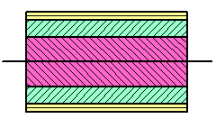
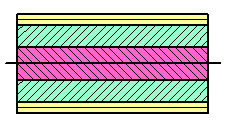
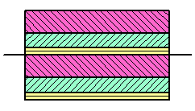
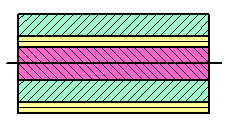

堆叠方法操作位于层片铺层组的层片列表中，要创建想要的层合板，这个层合板在层片草图器组中必须是可见的。
规则 — 生成与层片铺叠列表中所显示相同的层片序列，没有更改堆叠顺序
对称 — 生成层片为偶数的对称层片序列
核心对称 — 生成层片为奇数的对称层片序列。奇数层片表示中央的核心，假设核心为层片铺层列表中的顶部层片
重复的 — 产生重复的层片序列。复合板包含层片铺层列表的两个副本，每个列表的顺序与原始顺序相同，并且一个列表在另一个列表的顶部
核心重复 — 除了层片铺层列表中的顶部层片为核心且不重复外，与重复选项类似
|
 |
 |
|
对称 |
核心对称 |
|
 |
 |
|
重复的 |
核心重复 |